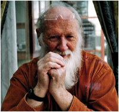

CURRICULUM VITAE
(March 2007)

B O D V A R S C H J E L D E R U P
Born 1932, at Eide, near Molde, Norway
Architectural diploma 1959, Norwegian Institute of Technology (presently, NTNU), Trondheim
P r a c t i c e :
Architecture (employed, and own projects, Helsinki, Stavanger, Trondheim; 12 years)
City planning (Stavanger; 10 years)
Teaching architecture (NTNU/Trondheim; 18 years)
International courses, including physical building: 'A Place of Silence', in collaboration with students and colleagues, 1989-1994.
publications and exhibitions (see below).
R e s e a r c h :
University scholarship: a study of 'sacred architecture (2 years)
Symbology, metrology, pyramidology etc for the last 25 years)
publications and exhibitions (see below).
P u b l i c a t i o n s :
(click on ¤ for close view; (E) = English; (N) = Norwegian)
B O O K S
Books & pamphlets for young people (songs, plays; GYLDENDAL e.a.1972-75)
¤ Evidence (E)
¤ Den lysende broen (N)
¤ Speil over helgengrav (N)
¤ Pilegrim/Pilgrim (N,E++)
¤ Loggbok for en helgen / A Saint's Logbook (N,E)
¤ The Sign of the Pact and Table Five (E,N)
¤ The Periscope : Book I – The Way to the Middle (E)
¤ Kodenes kammer (N)
¤ Gjenkjennelsens speil (N)
¤ Table Five (E)
¤ Mirror of Recognitions (E)
¤ A Riddle of Rings (E)
E X H I B I T I O N S
¤ Steinene synger / The Stones Sing / Es singen die Steine / Le chant des pierres (N,E++)
¤ Morgentegnet / Sign of Daybreak
¤ The House of Memory
¤ Unfolding the World
¤ Daybreak Archive – parts I-II-III +++:
L e c t u r i n g , s e m i n a r s :
In Norway : Trondheim, Bergen, Oslo, Stavanger, Kristiansand, Moss, Ålesund; Ås; Halsnøy; Tønsberg, Bodø, Vardø; Hamar; Kapp; Steinkjer; Stjørdal; etc – partially in connection with festivals, conferences, exhibitions etc.).
Abroad : The Netherlands (Eindhoven); Germany (Düsseldorf; world congress); Russia (Moscow, inter-national congress); Estonia (Tallinn); Lithuania (Vilnius); Iceland (Reykjavik); USA (Cincinnati; international congress); Hungary (Budapest; cultural festival).; Egypt (Alexandria / Bibliotheca Alexandrina); Sweden (Halmstad). |

{kind=link}
{kind=link}
{kind=link}
{kind=link}
{kind=link}
{kind=link}
{kind=link}
{kind=link}
{kind=link}
{kind=link}